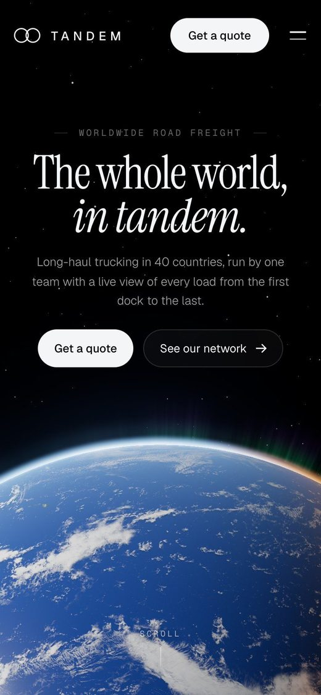
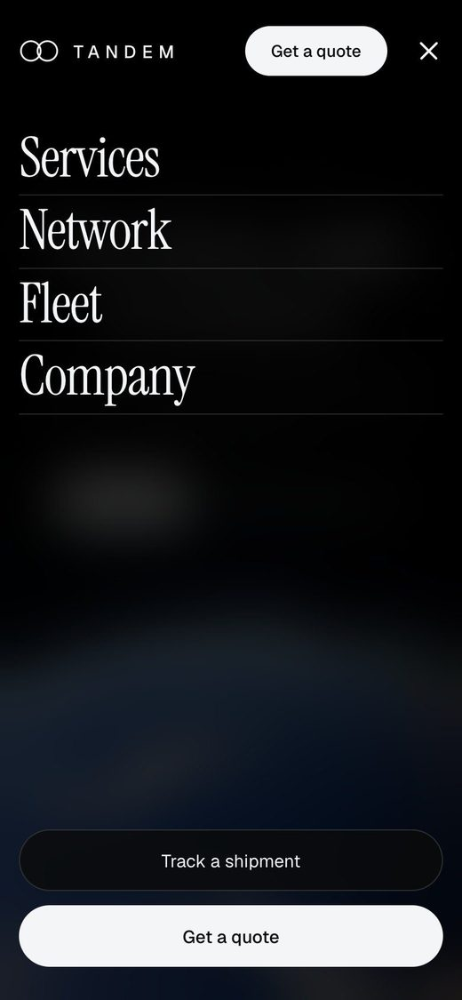

Tandem is a concept site for a worldwide road freight company. One unbroken camera move takes you from a live Earth in orbit, down to a desert highway at dusk, along the road, onto a container ship, and back up into space.
Freight sites love a map with dots on it. I bet that you would rather feel the distance: start in orbit, fall all the way down to one truck on one road, and follow the load until it is somewhere else entirely.
No cuts, no page loads. Scroll is the throttle.
Take the trip yourself.
The whole site is live. Give the Earth a second to load, then scroll.
The globe is live 3D running on real NASA imagery, with clouds, city lights and an atmosphere glow, so it turns under your cursor instead of looping.
It sits low on the screen like a horizon, which keeps the headline calm and the planet huge. The name is Tandem for the tandem axles on a truck, and the logo is those two axles.
The dive
The curve of the Earth flattens into a horizon as you scroll down toward it.
soft and lumpyI tried turning an AI image into a 3D model first. It came out soft and lumpy. Real satellite textures on a clean sphere won by a mile.
Built for the long way
The highway at dusk, scrubbed by your scroll, then the truck sweeps past.
Six ways to move a load
Overhead, each service rides along beside the truck.
The road ends at a port. A gantry crane lifts the container off the truck and onto a ship, and the ship pulls away into deep blue water.
Every piece is its own cut-out, so the crane, the container and the ship can all move separately. That is what makes the handoff feel like a handoff, and not a slideshow.
The crane makes the handoff
The container swings from the truck to the ship, and out to sea.
The camera climbs out of the ocean, through soft drifting clouds, until the whole Earth hangs at the top of the screen again. Then the footer: “Let’s move the world.” and a big Tandem wordmark.
Back in orbit
Through the clouds and up, until the planet hangs over the footer.
The whole trip
The full scroll, door to door: orbit, highway, overhead, port, sea, sky, orbit.
they flickeredMy first clouds were photos, and they flickered as they passed. These are built from soft layers at real altitudes, so they puff past the camera and never glitch.


Same trip, narrower road.
On a phone the headlines grow, and the two-line menu button crosses into an X, the two axles of the logo.
A full screen menu slides in with the big serif links.
Designed and coded by me, with Claude in the loop. No templates, no page builder.
 Claude CodeBuilding the site with me
Claude CodeBuilding the site with me HTML + CSSThe pages and the type
HTML + CSSThe pages and the type JavaScriptThe scroll film and the overhead road
JavaScriptThe scroll film and the overhead road three.jsThe live Earth
three.jsThe live Earth HiggsfieldThe road film, the truck and the port art
HiggsfieldThe road film, the truck and the port artGo on, drive it yourself.
Scroll down to the road and back up to orbit. Give the Earth a second to load.